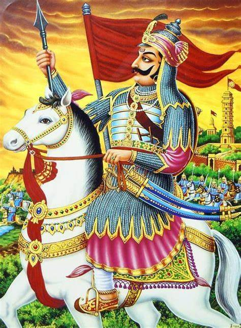

Maharana Pratap Singh

Maharana Pratap Singh
The Lion of India
"The primary duty of a ruler is to protect the pride and honour of his country"
- Rana Pratap Singh, (born 1545?, Mewar [India]—died January 19, 1597, Mewar), Hindu maharaja
(1572–97) of the Rajput confederacy of Mewar, now in northwestern India and eastern
Pakistan.
- He successfully resisted efforts of the Mughal emperor
Akbar to conquer his area and is honoured as a hero in Rajasthan.
- The son and successor of the weak Rana Udai Singh, Rana Pratap sought to avenge the 1567 pillage of his capital, Chitor, and subsequent raids by Akbar
- The bloody Siege of Chittorgarh in 1567-1568 had led to the loss of the fertile eastern belt of Mewar to the Mughals. However, the rest of the wooded and hilly kingdom in the Aravalli range was still under the control of Maharana Pratap.